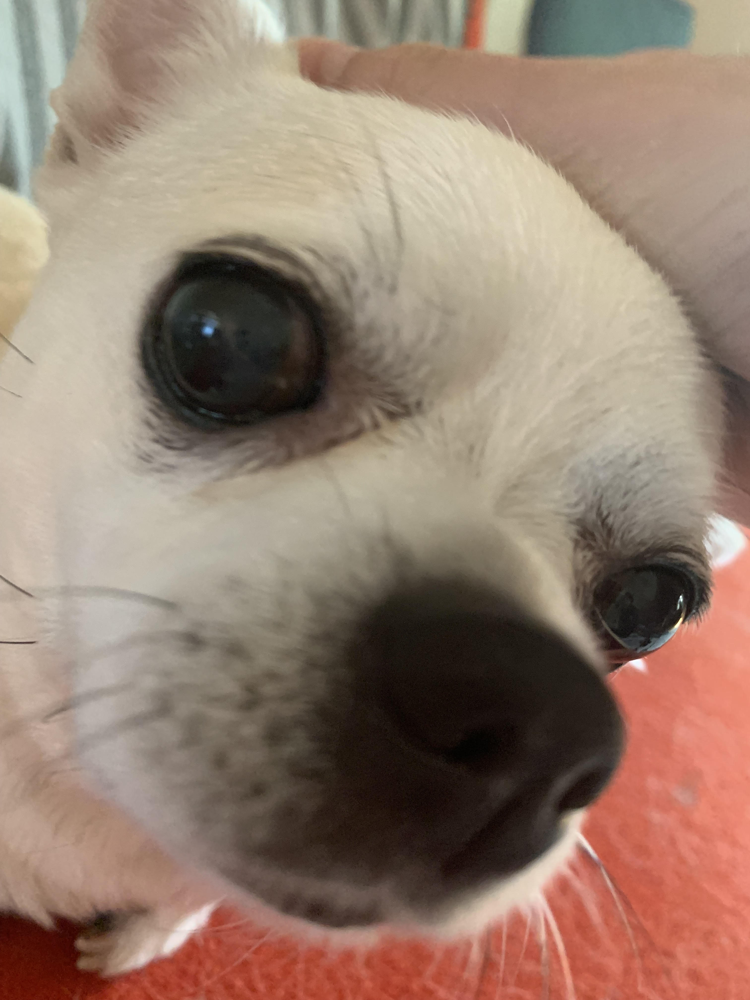

Aki's Favourite Things !!!
Guitar !!
It's really fun to learn my favourite songs and play along to them. I'm
also in a band, and it's very rewarding to hear how good all the
instruments sound together. I've been playing in a band for almost a year,
and playing guitar for about 1.5 years. I'm not skilled enough to play
some songs but I'm improving fast !
Here are some songs I know how to play! (click the title to hear the
song!)
Right now I have a
Yamaha Pacifica
, but my dream guitar is a
Gibson cherry SG.
Videogames !!
They're really fun to play in my free time, and I've made a lot of friends
through our interests in the same games. Here are some of my favourites
recently!!
My very cute amazing pets !!!!
Tim ! (my cat)
He is four or five (??) years old. He is very cuddly and soft. He's an
outdoor cat, and whenever he's in the backyard we see his cat friends too!
He has his own table downstairs for his food dishes. Whenever he's hungry,
he knocks the dishes and whatever's in it off the table üòêüòêüòê but it's okay
because he's cute.

Millie !
She's 10 or 11 years old but still acts like a puppy. She's very cute but
she's a little stubborn, she barks at anyone she can. Even dogs 10x her
size.

Jennie!
She's the youngest of them all. She is about 3 years old. She's very very
shy and anxious to new people but the most playful and silly dog ever ! She
loves to walk in circles around whoever is taking her on a walk and getting
her leash all tangled up. üòê